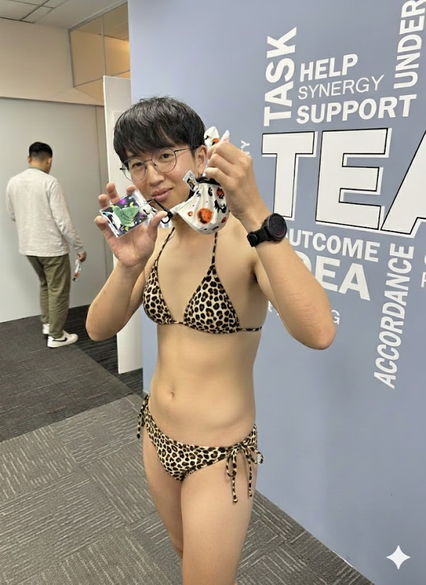
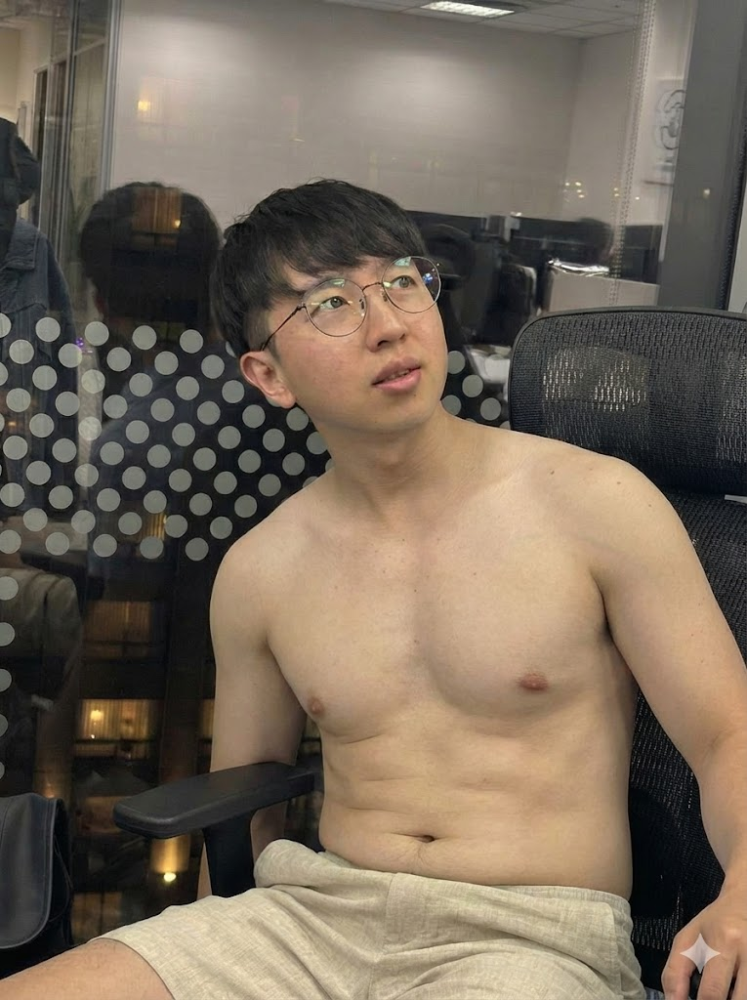
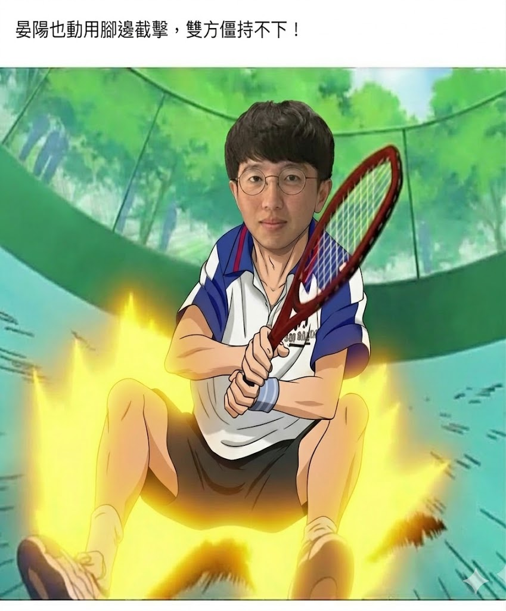

關於我：Yang Yen 師傅
「深信手心的溫度能療癒心靈，從事按摩產業已有 10 年，專注於為每一位疲憊的客人找回身體的平衡。」
持有國家級按摩技師證照、精油芳療高階認證。

「深信手心的溫度能療癒心靈，從事按摩產業已有 10 年，專注於為每一位疲憊的客人找回身體的平衡。」
持有國家級按摩技師證照、精油芳療高階認證。

早期投身專業體能訓練，開啟對人體肌肉構造與生理反應的深度研究，奠定扎實的解剖學基礎。
代表國家參與高強度賽事，在極限環境中建立嚴謹的自律意志，並精通各類運動生理力學與防護。

於臨床醫療現場深耕多年，磨練出極致細膩且穩定的手感，能精準察覺身體每一處細微的肌肉變化。

征戰職業網球賽場並擔任體能指導，將科學理論與實作結合，專研高壓運動後的肌肉快速修復心法。

創立個人工作室並擔任資深導師，服務過上千位高端客戶，致力於以深度放鬆手法為忙碌現代人排解壓力。